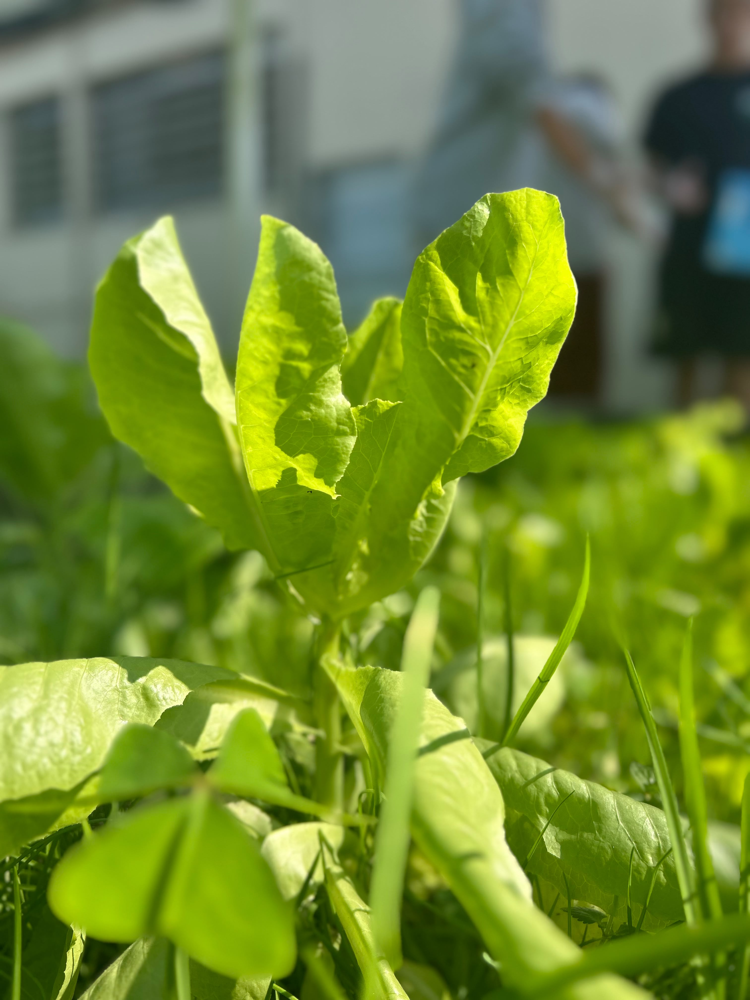
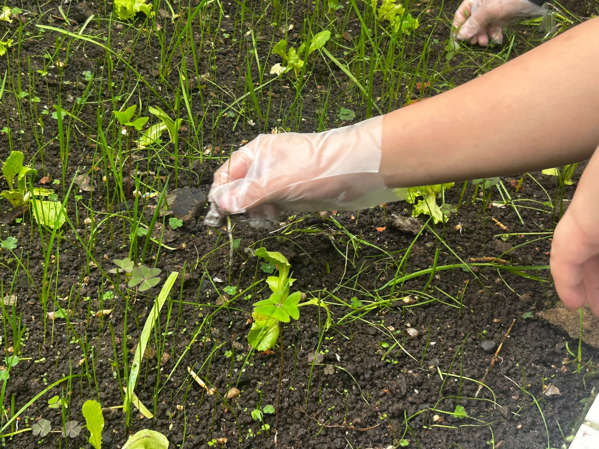
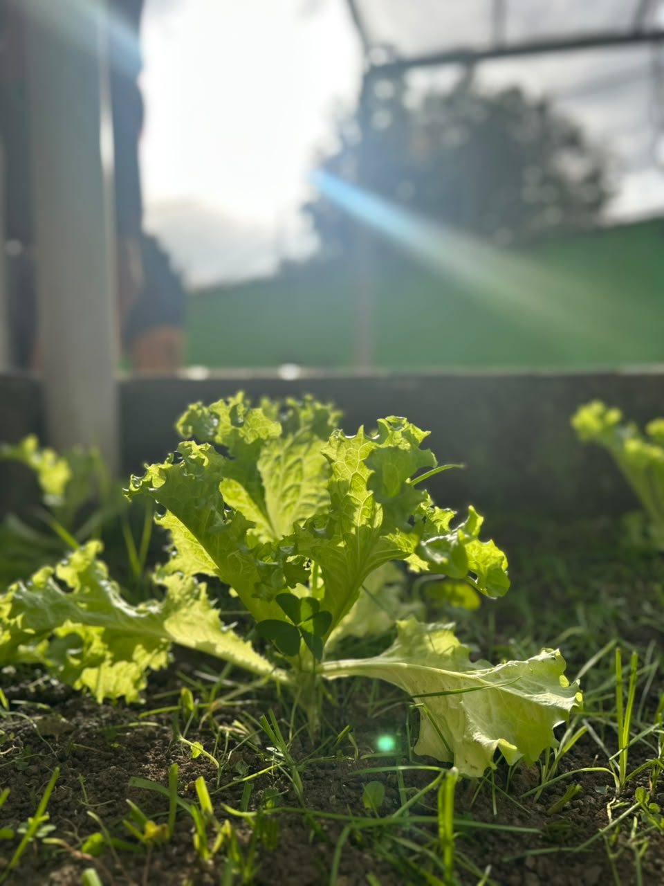
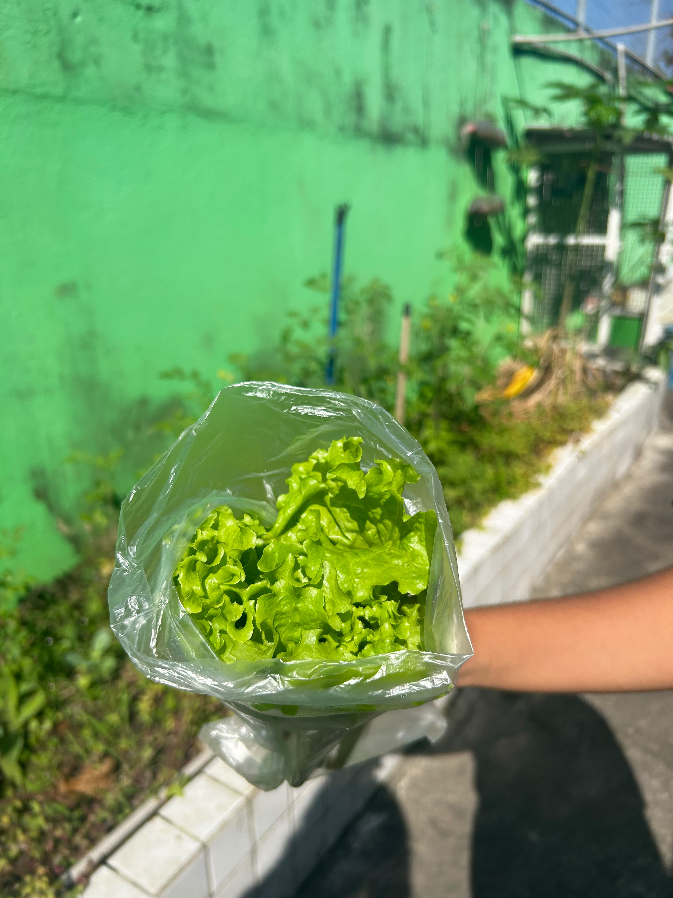
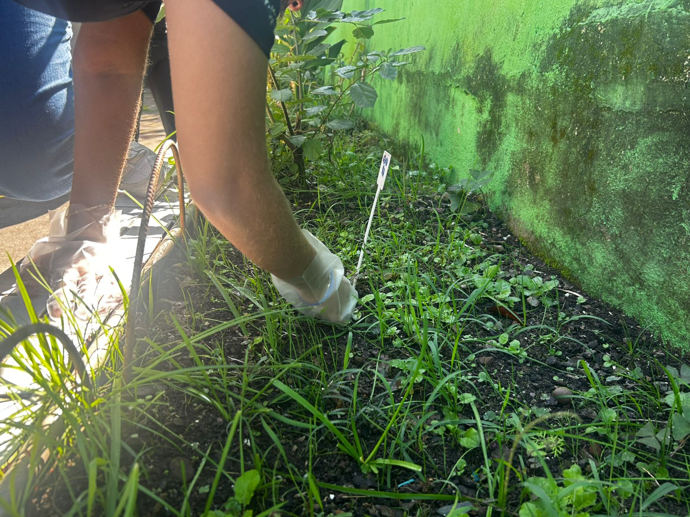
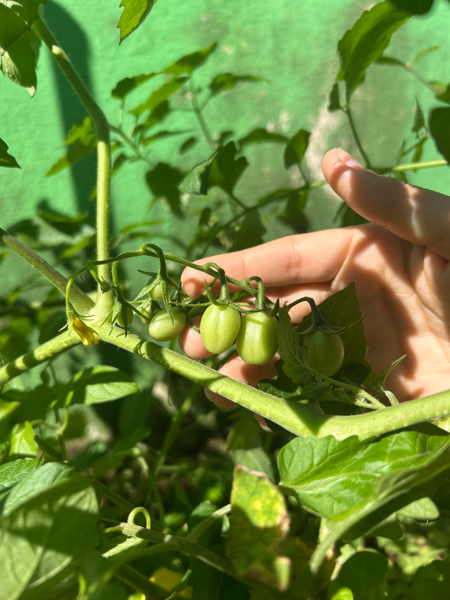
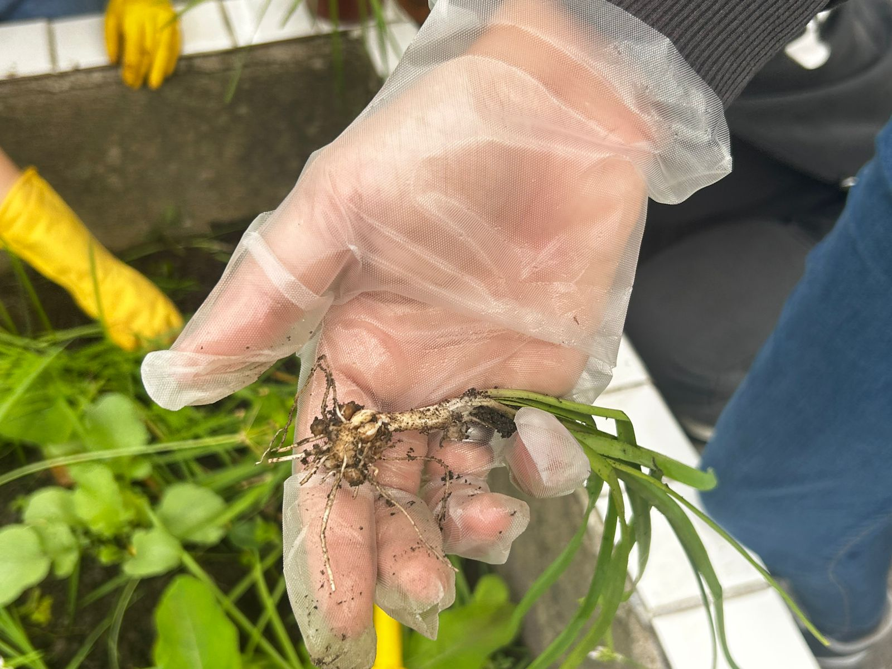

Verduras
Plantas cultivadas para alimentação, com cuidados que acompanham todo o processo de crescimento.
Conheça nosso espaço, acompanhe o desenvolvimento das plantas e veja um pouco do trabalho realizado pelo 3º Vendas.
Nossa horta é um espaço onde os alunos podem colocar em prática conhecimentos sobre cultivo, sustentabilidade e trabalho em equipe.
Cada etapa do projeto exige organização, responsabilidade e colaboração. Desde o preparo do espaço até os cuidados com as plantas, todos podem contribuir para que a horta continue crescendo.
Plantas cultivadas para alimentação, com cuidados que acompanham todo o processo de crescimento.
Diferentes culturas fazem parte do espaço e ajudam os alunos a conhecer novas formas de cultivo.
Regar, acompanhar o crescimento e manter o espaço organizado são partes importantes do projeto.
Confira alguns registros do projeto e acompanhe de perto o desenvolvimento da nossa horta.

Alface crescendo

Preparação do solo

Cultivo da alface

Colheita da alface

Alface colhida

Cuidados com a horta

Tomates em crescimento

Colheita das raizes
Preparar o espaço e plantar as sementes ou mudas que farão parte da horta.
Acompanhar o crescimento, realizar a irrigação e manter o espaço bem cuidado.
Observar os resultados do trabalho realizado e aproveitar o que foi cultivado.
A Horta do 3º Vendas representa nosso trabalho, nossa colaboração e tudo o que podemos aprender quando colocamos uma ideia em prática.
Ver curiosidades →